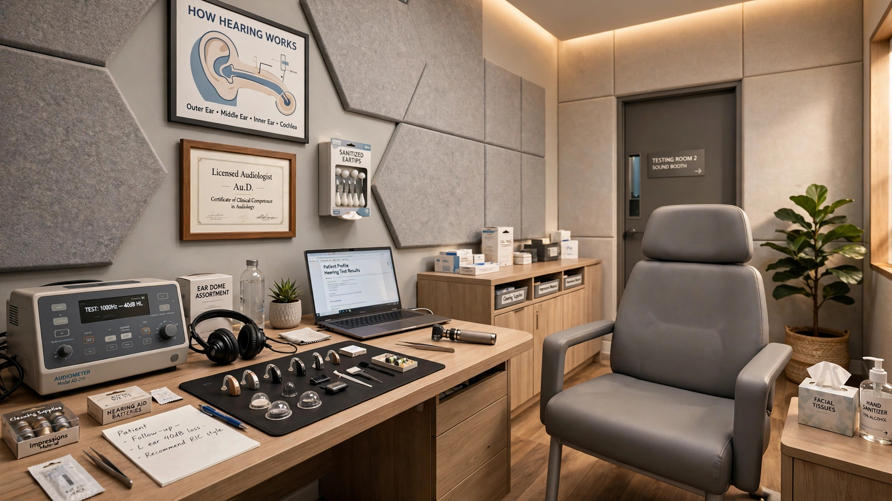

Audiology Practice Revenue Intelligence SaaS for Independent Clinics
Hearing aid manufacturers now own the retail networks, the third-party administrators, and the reimbursement schedules. The 12,000 independent audiology practices negotiating TPA contracts blind are forfeiting an estimated $1.4 billion a year in margin to the companies that also supply their inventory.

The Problem
The U.S. hearing aid market reached $4.94 billion in 2024 (Fortune Business Insights) and is projected to hit $11.54 billion by 2032, growing at 11.3% annually. Five manufacturers control the supply side: Sonova (Phonak, Unitron), Demant (Oticon, Bernafon), GN Store Nord (ReSound, Beltone), WS Audiology (Widex, Signia), and Starkey, the only one still headquartered in the United States. Between them, they make virtually every prescription hearing aid dispensed in this country.
Here is the structural problem that independent audiology practices face: those same five manufacturers have spent the past decade buying the distribution channel. Sonova operates over 3,200 audiological care locations in 20 markets, including the Connect Hearing network in the U.S. WS Audiology owns HearUSA. Amplifon, the world's largest hearing aid retailer, operates the Miracle-Ear franchise network and in 2026 announced its acquisition of GN Hearing for DKK 17.0 billion (~$2.5 billion USD), creating a vertically integrated manufacturer-retailer expected to generate €3.3 billion in combined revenue. A HearingTracker analysis called it "backward integration [that] will reshape the global hearing care industry."
The vertical integration extends beyond retail. Most hearing-care third-party administrators (TPAs), the entities that manage hearing benefits for Medicare Advantage plans, self-funded employers, and commercial insurers, are owned by, contracted with, or affiliated with major hearing aid manufacturers, retailers, and/or distributors (American Academy of Audiology, 2022). TruHearing, Nations Hearing, and United Healthcare Hearing dominate the TPA market. When an independent audiologist joins a TPA network, they accept a fixed fitting fee and constrained device selection set by an entity whose corporate parent also operates competing clinics down the street.
The economics are punishing. The Hearing Journal reported in 2026 that moderate-sized audiology clinics "often operate with six-figure monthly expenses" while dispensing "approximately 8 to 15 units per month per full-time clinician." At an average bundled price of $4,200 per pair and device cost of goods around $1,200-$1,500 per pair, a solo practitioner dispensing 10 units per month generates approximately $42,000 in gross revenue against $12,000-$15,000 in device COGS and $25,000-$35,000 in monthly operating expenses. Thin enough to cut yourself on.
When TruHearing tells an independent audiologist in suburban Denver that "$275 is the fitting fee for this plan," the audiologist has no mechanism to verify that claim, no way to know whether practices in the same metro are receiving $325 or $225 for identical work, and no dataset showing what the manufacturer's own Connect Hearing location two miles away receives as an internal transfer. The information asymmetry is total, and it runs in one direction: toward the companies that make, distribute, administer, and retail the product.
Market Size
| Funnel Stage | Count | Derivation |
|---|---|---|
| Total hearing healthcare professionals (US) | ~22,200 | NPPES: 22,226 audiologists + HIS |
| Private practice / independent settings | ~12,000-13,000 | 55-60% in private practice (ASHA) |
| Less: sub-scale facilities (<$200K rev) | −1,500 | Single-room, rural solo operators |
| Addressable practices | 10,500 | |
| Blended ARPU | $299/mo | 60% Standard $199, 40% Premium $449 |
| Base TAM | $37.7M ARR | 10,500 × $299 × 12 |
TAM detail: The Bureau of Labor Statistics counts 15,800 employed audiologists in the United States as of 2024. ASHA reports 14,007 certified audiologists. Adding approximately 8,478 hearing instrument specialists who independently dispense hearing aids (NPPES data through 2022), the total hearing healthcare workforce exceeds 22,000. Of these, an estimated 55-60% work in or own private practices or small group settings, yielding approximately 12,000-13,000 independent dispensing locations.
At a Standard tier of $199/month (anonymized revenue benchmarks, TPA rate comparisons, device margin analytics by manufacturer) and a Premium tier of $449/month (real-time TPA rate alerts, unbundling profitability modeling, contract negotiation brief builder), with an estimated 60/40 split, the blended ARPU is $299/month. At 10,500 addressable practices, the base TAM is $37.7 million in annual recurring revenue.
A secondary revenue stream targets hearing aid manufacturers and PE firms evaluating audiology acquisitions. Between 2011 and 2024, 550 PE-backed acquisitions of ophthalmology and optometry practices were identified in the Pitchbook database; audiology has followed a parallel consolidation trajectory. Aggregated market intelligence reports for acquirers and consultants represent an additional $8-12 million opportunity. The realistic SAM targets 3,500 paying practices at blended $299/month plus $4 million in enterprise licensing, yielding a Year 3 target of $16.5 million ARR.
The Product
An anonymized revenue benchmarking and contract intelligence platform purpose-built for independent audiology practices, modeled on STR for hotels and CoStar for commercial real estate. This is not practice management software. It is the analytical layer that sits on top of whatever PMS the practice already uses, consuming anonymized data to produce market-grade intelligence that no individual practice can generate alone. Core modules:
- TPA rate radar: Anonymized, real-time benchmarks on what TPAs pay for professional fitting fees, broken down by TPA name, plan type (Medicare Advantage, commercial, workers' comp), geography, and device tier. A practice owner in Phoenix can see where their TruHearing fitting fee of $275 sits relative to the market: 32nd percentile in the Phoenix metro, 18th percentile among AuD-credentialed providers. That single data point transforms the next contract renewal from a dictation into a negotiation. When a TPA quietly reduces fitting fees across a region, 300 practices seeing it simultaneously creates the collective awareness that catalyzes pushback
- Device margin analyzer: Because hearing aid manufacturers set wholesale prices for independents while simultaneously selling through their own retail networks at internal transfer prices, the manufacturer-to-independent wholesale price is not a market price. It is a tax. This module aggregates anonymized device COGS data across practices by manufacturer, technology tier, and channel to reveal the actual price spread. When practices discover that Manufacturer X charges independents $685 per unit wholesale while its own retail arm books the same unit at $280 internal cost, the competitive distortion becomes quantifiable and actionable
- Revenue-per-fitting dashboard: Per-fitting revenue analytics by type (bilateral vs. monaural, device tier, bundled vs. unbundled, insurance-paid vs. cash-pay), benchmarked against anonymized peer practices in the same metro. The revenue-per-fitting spread across practices runs from under $2,000 to over $5,000 per bilateral fitting, but no independent practice knows where it falls in that distribution. The dashboard also tracks payer mix shifts, since TPA-directed fittings are growing as a share of volume while contributing lower per-unit margin than self-pay or traditional insurance
- Unbundling profitability modeler: The traditional audiology revenue model bundles device cost and all professional services into a single price. ASHA's unbundling guidance and PMC research on reimbursement factors both acknowledge the shift toward partial or complete unbundling, but most practices have no data on what unbundled service fees the market will bear. This module simulates the revenue impact of transitioning from bundled to unbundled pricing at various service fee levels, using anonymized market data on what consumers and insurers actually pay for itemized audiological services in the practice's specific metro
Unit Economics
| Metric | Value |
|---|---|
| Monthly subscription (Standard: benchmarks + TPA analytics) | $199/practice |
| Monthly subscription (Premium: full intelligence suite) | $449/practice |
| Blended ARPU | $299/month |
| Data infrastructure cost per subscriber/month | $18 |
| Customer acquisition cost | $1,850 |
| Expected LTV (30-month avg retention, 94% gross margin) | $8,432 |
| LTV:CAC ratio | 4.6:1 |
| Gross margin | 94% |
| Startup cost (18-month runway) | $2.8M |
| Break-even | 20 months |
Methodology note: The 30-month retention assumption reflects the annual TPA contract renewal cycle that locks practices into benchmarking data dependency. Once a practice uses rate data to negotiate a $50/fitting increase on even one TPA contract handling 80 fittings per year, the annual revenue gain is $4,000 against a $2,388-$5,388 annual subscription cost, a 1.7:1 payback on Standard or 0.7:1 on Premium from a single contract improvement. Most practices hold 3-5 TPA contracts; aggregate gains compound quickly. CAC of $1,850 assumes a targeted B2B motion through American Academy of Audiology partnerships, state audiology association chapters, AudiologyOnline continuing education sponsorships, and direct outreach at the AAA annual conference (5,000+ attendees) and ASHA Convention. The audiology profession is unusually concentrated in its information channels: The Hearing Journal, Audiology Today, Hearing Health Matters, and HearingTracker reach a majority of practice owners.
Go-to-Market
Phase 1 (months 1-8): Recruit 400 practices across four dense audiology markets (Dallas-Fort Worth, Atlanta, Chicago, and Phoenix) to contribute anonymized revenue and rate data in exchange for free benchmarking access. These metros were selected for high practice density, active TPA penetration, and documented reimbursement pressure. The cold-start data contribution is less onerous here than in most benchmarking plays: the key data points are a handful of TPA fitting fees, device COGS by manufacturer, and monthly unit volume, reportable in under ten minutes per month. Target recruitment through Academy of Doctors of Audiology (ADA) state chapters, which have direct relationships with practice owners and an institutional interest in independent practice viability.
Phase 2 (months 9-16): Monetize with the $199/month Standard tier. Expand to 12 additional markets covering the top 20 audiology DMAs by practice count. Begin ingesting data from practice management systems via API integrations with Sycle (dominant PMS in audiology, used by approximately 40% of private practices), Blueprint OMS, and CounselEAR. Automated data ingestion replaces manual reporting and dramatically increases data freshness and volume. Launch the TPA-specific rate trend dashboard, showing not just current rates but rate trajectory by TPA, by plan type, by metro, updated quarterly.
Phase 3 (months 17-24): Launch Premium tier at $449/month with the unbundling profitability modeler and contract negotiation brief builder. Begin selling anonymized market intelligence to PE firms evaluating audiology acquisitions (the ophthalmology PE wave peaked in 2021 with 71 acquisitions; audiology M&A is following the same curve with a lag). Approach Sonova, Amplifon, and WS Audiology as enterprise subscribers who need market intelligence across their own expanding clinic portfolios, since their internal data covers only their own locations, not the independent practices that still dispense the majority of hearing aids. Target 3,500 total subscribers at blended ARPU of $299/month = $12.5 million ARR from subscriptions plus $4 million in enterprise licensing.
Competitors
| Company | What It Does | Revenue Intelligence? | Pricing |
|---|---|---|---|
| Sycle | Practice management system for audiology: scheduling, patient records, insurance billing, hearing aid ordering | Owns the transactional data but does not anonymize, aggregate, or benchmark it across practices. Sycle sees each practice's revenue; practices see only their own | $200-500/mo |
| CounselEAR | Cloud-based PMS with NOAH audiometer integration, billing, and patient communication | Same structural limitation: operational data stays siloed per practice | $150-350/mo |
| HearingTracker | Consumer-facing hearing aid comparison and clinic directory. Provider tools for reviews and practice profiles | Consumer price transparency, not provider revenue benchmarking. Shows what patients pay, not what practices earn from TPAs | Free/$99/mo provider listings |
| TPA Portals (TruHearing, Nations Hearing) | Benefits administration, patient referral, claims processing for managed hearing care plans | TPAs know every participating practice's rates and volumes. They do not share this data with practices. The information asymmetry is their business model | N/A (practice joins network) |
| ASHA/AAA Practice Resources | Professional association practice management guides, salary surveys, advocacy | Annual surveys with broad averages. No real-time, metro-level, TPA-specific rate benchmarking. Useful for general reference, not for contract negotiation | Membership dues |
| This startup | Anonymized revenue benchmarking and contract intelligence for independent audiology practices | Core product: the STR/CoStar of audiology practice revenue intelligence | $199-449/mo |
The gap is structural, not accidental. Sycle, the dominant PMS, was acquired by WS Audiology (Widex/Signia parent) in 2016 and operated as a manufacturer-owned platform until its spin-out. Even post-spin, Sycle's business model depends on manufacturer and TPA relationships for device ordering integrations and claims workflows. Building a product that helps independent practices extract higher fitting fees from TPAs affiliated with those same manufacturers would create a direct conflict of interest with its integration partners. The PMS platforms cannot build what their upstream partners would hate. The intelligence layer must come from an entity with no manufacturer or TPA affiliations.
Why Now
Five forces converging in 2026 make this the right window for an audiology revenue intelligence platform.
First, the Amplifon-GN Hearing acquisition is the largest vertical integration event in hearing care history, and it has spooked independent practitioners. When the world's biggest hearing aid retailer acquires the world's third-largest hearing aid manufacturer for $2.5 billion, every independent practice that dispenses GN's ReSound or Beltone products is now buying inventory from a direct retail competitor. The deal is expected to close by the end of 2026. Independent audiologists are asking, for the first time at scale, whether their wholesale pricing from GN will remain competitive when GN's parent operates 9,000+ Amplifon and Miracle-Ear locations worldwide. That anxiety creates a receptive market for a tool that answers the question with data.
Second, OTC hearing aids have not destroyed the prescription market, but they have permanently compressed the price floor. MarkeTrak 2025 data shows OTC devices added only 4 percentage points to overall hearing device adoption, and prescription hearing aid adoption remains stable at 39%. However, Chinese OTC manufacturers are now achieving A-grade results in independent HearAdvisor testing at $369-$599, matching speech clarity outcomes on products historically priced at $4,600 or more. That 90% price collapse is not yet reflected in prescription volumes, but it has shifted the consumer reference price permanently downward. Practices that cannot demonstrate superior value through data-driven service differentiation will lose the pricing argument to Costco's $1,499 Kirkland Signature hearing aids, which already make Costco the largest single hearing aid retailer in the U.S.
Third, the bundled pricing model that sustained audiology for decades is fracturing under insurer and TPA pressure. Traditionally, audiologists bundled device cost and all professional services (evaluation, fitting, verification, counseling, follow-up adjustments, batteries) into a single price of $3,500-$7,000 per pair. TPAs and insurers are increasingly requiring partial or complete unbundling, separating the device payment from the professional service fee. This exposes the professional service component to direct scrutiny and downward pressure from entities that have zero incentive to let audiologists charge market rates. PMC research on hearing aid reimbursement confirms that "insurance requirements are forcing a movement toward partial or complete unbundling of associated costs" with "no uniformity for which charge method is best." Practices navigating this transition without benchmarking data are flying blind into the most consequential pricing restructuring their profession has faced.
Fourth, Medicare Advantage plan enrollment hit 34.2 million in 2026, representing over 54% of all Medicare beneficiaries. MA plans increasingly include hearing aid benefits administered through TPAs. This means a growing share of hearing aid revenue for independent practices flows through TPA-set rates, not through direct patient billing. The American Academy of Audiology's 2024 recommendations to CMS explicitly called for "increased transparency around the nature and amount of the hearing benefit" and stated that "TPA contracts should not constrain the professional judgement of the audiologist." The professional associations recognize the problem. They lack the data infrastructure to solve it.
Fifth, the audiology workforce itself is shifting in ways that increase the need for business intelligence. NPPES data shows hearing instrument specialists grew 190% between 2012 and 2022 (from 2,918 to 8,478), while audiologists grew 60% (from 13,852 to 22,226). Hearing instrument specialists now represent 27.6% of the hearing healthcare workforce, up from 17.4% a decade ago. Many operate in independent or small-chain settings and face the same TPA reimbursement opacity as audiologists, but without the doctoral training or professional association infrastructure to advocate for better rates. They are an underserved segment within an underserved market.
Original Contribution: The Vertical Integration Tax
A calculation nobody has published: We can estimate the aggregate margin that independent audiology practices forfeit annually because they compete against vertically integrated manufacturer-retailers who enjoy structural cost advantages invisible to the independents.
The build-up starts with device cost-of-goods. Hearing aid component costs are approximately $100 per device (PCAST report). Manufacturers sell to independent practices at wholesale prices typically ranging from $550-$750 per unit for mid-tier technology (industry estimates from practice management consultants). When a manufacturer sells through its own retail network, the internal transfer reflects manufacturing cost plus a margin allocation, typically $200-$350 per unit. The differential: $250-$450 per unit in COGS advantage for manufacturer-owned clinics.
| Component | Value | Source |
|---|---|---|
| Device component cost | ~$100/unit | PCAST report (PMC4880273) |
| Wholesale price to independents | $550-$750/unit | Practice management consultants |
| Internal transfer price (mfr-owned retail) | $200-$350/unit | Estimated from segment financials |
| Per-unit COGS gap | $250-$450/unit | Wholesale minus transfer |
| Avg. units/month per practice | 20 (10 bilateral pairs) | Hearing Journal, 2026 |
| Annual COGS penalty per practice | $84,000 | 20 × $350 midpoint × 12 |
| Independent practices | ~12,000 | BLS/ASHA/NPPES derived |
| Aggregate COGS differential | ~$1.0 billion/year | $84K × 12,000 |
The second component is TPA fitting fee compression. Independent practices that accept TPA-directed patients receive professional fitting fees set by the TPA, typically $200-$350 per bilateral fitting. Practice management analysis suggests the break-even hourly rate for a two-audiologist practice is approximately $149-$164 per hour. At 8-10 contact hours per hearing aid patient (evaluation, fitting, verification, follow-up adjustments, counseling), the break-even cost of professional services per fitting is $1,190-$1,640. A TPA fitting fee of $275 covers 17-23% of actual service delivery cost.
| Component | Value | Source |
|---|---|---|
| TPA fitting fee (typical) | $200-$350 | AAA/ASHA contract guidance |
| Break-even hourly rate | $149-$164/hr | Hearing Health Matters, 2019 |
| Contact hours per fitting | 8-10 hrs | ASHA unbundling guidance |
| True cost of service per fitting | $1,190-$1,640 | Rate × hours |
| Per-fitting fee gap | $400-$600 | 50th percentile recovery vs. TPA rate |
| TPA-directed fittings/year (est.) | ~2.5 million | See note below |
| Aggregate fee compression | ~$400 million/year | $400 avg gap × 2.5M fittings × 40% |
TPA volume note: The 2.5 million figure is derived from approximately 3.6 million hearing aids sold annually in the U.S. (HIA/MarkeTrak industry data), of which roughly 65-70% flow through some form of third-party benefit. Not all third-party fittings are TPA-administered; we conservatively estimate 55% of third-party volume (about 2.5 million units adjusted to bilateral equivalent fittings) passes through TPA-managed networks that set independent provider rates. The 40% factor applies because the $400-$600 gap represents the difference between current TPA rates and a still-below-market 50th-percentile rate, not full cost recovery.
Combined, the COGS differential ($1.0B) and the TPA fee compression ($400M) yield a total vertical integration tax of approximately $1.4 billion per year. Divide by 12,000 practices: roughly $117,000 per practice per year in margin forfeited to structural asymmetries. For a practice generating $800,000 in annual revenue on 6-8% net margins ($48,000-$64,000 in net income), the vertical integration tax represents 183-244% of total annual profit.
Limitations
This analysis has four material weaknesses. First, the $200-$350 internal transfer price for manufacturer-owned retail is an estimate derived from industry consultant commentary and manufacturer financial disclosures (segment-level COGS), not from audited internal transfer pricing schedules. Manufacturers do not publish these figures. The actual COGS advantage could be smaller if manufacturers allocate substantial R&D and overhead costs to the retail segment, or larger if transfer pricing is optimized for tax or segment-reporting purposes. A rigorous study would require access to confidential manufacturer financials.
Second, the "12,000 independent practices" figure is approximate. The hearing healthcare workforce includes audiologists, hearing instrument specialists, and ENT practices that dispense hearing aids. Some practices counted as "independent" may be affiliated with manufacturer networks through exclusive supply agreements that provide preferential wholesale pricing, partially closing the COGS gap. The true number of independent practices experiencing the full vertical integration tax could be 9,000 or 15,000 depending on how affiliation is defined.
Third, the TPA fitting fee compression analysis assumes that practices cannot recover their cost of service delivery through device margin alone. In reality, some practices operating in high-income metros with favorable patient demographics can absorb below-cost fitting fees because their self-pay and private-insurance patient mix generates sufficient margin to cross-subsidize TPA patients. The aggregate figure masks substantial variation: a practice in Scottsdale with 70% self-pay patients faces a very different economic reality than a practice in rural Georgia where 80% of volume comes through Medicare Advantage TPAs.
Fourth, data contribution willingness is uncertain. The audiology profession is small and collegial, which can work for or against anonymized data sharing. Practices may fear that contributing rate data could expose their specific TPA arrangements, particularly if they have negotiated above-market rates through personal relationships. The legal enforceability of TPA contract confidentiality clauses against anonymized aggregation has not been tested in audiology.
Strongest Counterargument
The most compelling case against this startup is that vertical integration in hearing care is not an information problem but a power problem, and a SaaS benchmarking tool cannot fix a power imbalance.
Consider the mechanism. An independent audiology practice that discovers its TruHearing fitting fee is at the 25th percentile in its metro can ask for more, but TruHearing can simply say no and route patients to the manufacturer-owned clinic instead. The TPA does not need the independent practice; it has captive supply through its parent company's retail network. The independent practice, on the other hand, cannot afford to walk away from TPA volume when TPA-directed patients constitute 30-60% of its monthly fittings. The negotiation is not blind; it is coercive. Transparency about the coercion does not end it.
Worse, if all independent practices in a metro gain rate intelligence simultaneously and collectively push back on TPA rates, the rational TPA response is not to raise rates but to accelerate the shift toward manufacturer-owned locations where rates are an internal accounting exercise. Rate intelligence could actually hasten the consolidation it aims to resist, by making independent practices a more expensive component of the TPA's provider network relative to captive supply.
The counterpoint: this is the argument against every benchmarking product in every industry undergoing consolidation, and it has been wrong more often than it has been right. STR did not accelerate hotel consolidation. CoStar did not accelerate commercial real estate consolidation. What benchmarking tools do is identify the practices for whom independence is economically viable and help them optimize within that viable range, while also identifying the practices for whom the economics have already tipped and whose best move is to negotiate an acquisition at fair value rather than slow-bleed into insolvency. Both outcomes are better than operating blind. The practice that knows its TPA fitting fee is at the 25th percentile can push for 50th, or walk and reallocate that chair time to higher-margin self-pay patients, or calculate the acquisition multiple that makes selling the right move. Data does not guarantee power, but it eliminates the particular kind of weakness that comes from not knowing you are being underpaid.
The Bottom Line
Twelve thousand independent audiology practices forfeit approximately $1.4 billion annually to structural asymmetries they cannot see. The vertical integration tax, roughly $117,000 per practice, often exceeds total annual net income. OTC devices compress the price floor from below. Costco compresses it from the side. TPAs compress professional service fees from above. And the bundled pricing model that papered over all of this for decades is fracturing under insurer pressure. The benchmarking tools that solved identical opacity problems in hotels (STR), commercial real estate (CoStar), and collision repair do not exist in audiology, and the incumbent platforms cannot build them without alienating the manufacturers and TPAs that sustain their integration revenue. The analytical layer that independent audiology needs will come from outside the hearing aid supply chain, or it will not come at all.
What You Can Do
If you own an independent audiology practice, start by calculating your true cost of service delivery per fitting, including the hourly break-even rate described in Hearing Health Matters' practice economics series. Most practice owners have never performed this calculation. Once you know your break-even hourly rate, multiply by the number of contact hours per fitting (typically 8-10 for a bilateral, including follow-ups) and compare that number to what each of your TPA contracts pays for professional services. If the TPA fitting fee is below your cost of service delivery, you are subsidizing that TPA's patient volume with margin from your self-pay patients. That is a calculable decision, not an inevitable one. If you are a hearing aid manufacturer or TPA, understand that the analytical layer your independent providers lack is also the analytical layer that, once built, will expose the structural economics you currently benefit from. The question is whether you build it yourself on terms you can influence, or wait for someone else to build it in a posture of adversarial transparency. History suggests you will wait.
Related
📰 Collision Repair Labor Rate Intelligence SaaS — the identical information asymmetry between independent operators and powerful counterparties who control both the data and the reimbursement rates
📰 PBM Reimbursement Audit SaaS for Independent Pharmacies — another healthcare vertical where intermediaries (PBMs/TPAs) extract margin from independent providers through opaque pricing
📰 Dental Practice Transaction Intelligence — PE consolidation compressing independent practice economics in a parallel healthcare services market